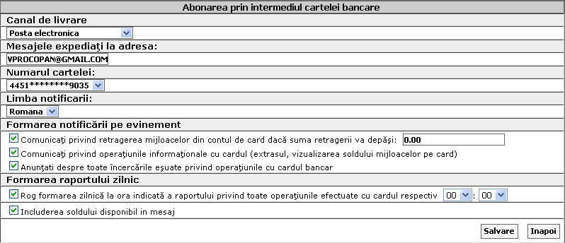
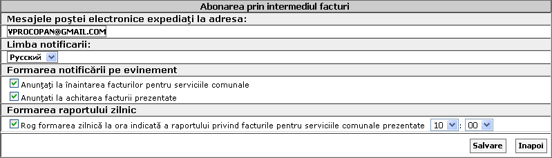
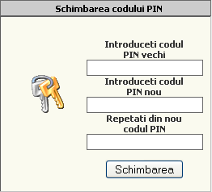
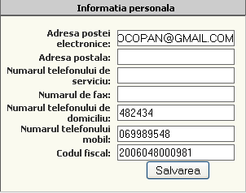

|
|
Aveti posibilitatea sa programati trimiterea mesajelor SMS sau Email in privire cu modificarea conturilor, facturilor, documentelor, raporturi zilnice cu sold.
Carduri , notificari la evenimente de retrageri banesti, extras, incercari eronate de a efectua operatii.
Facturi , notificari inaintarea facturilor pentru servicii comunale, la achitarea lor.
Documente, emite raporturi in forma de documente cu privire la solduri.
Cursuri de schimb, emite informatia privind cursul valutar.
In Meniul dat aveti posibilitatea sa schimbati codul PIN din contul de pe Telebank.md
Se modifica Datele personale ce vor fi folosite numai in cadrul sistemului Telebank.

Configurati meniul "Telebank" dupa cerintele dv-stra. Selectati Blocuri meniu care sunt afisate din partea treapta a website-ului Telebank.md
Curs Valutar, Conturi, Statistica